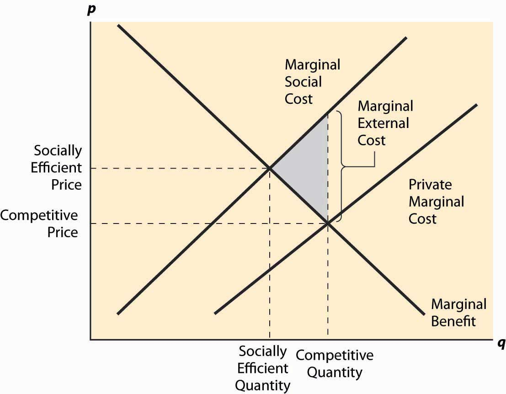
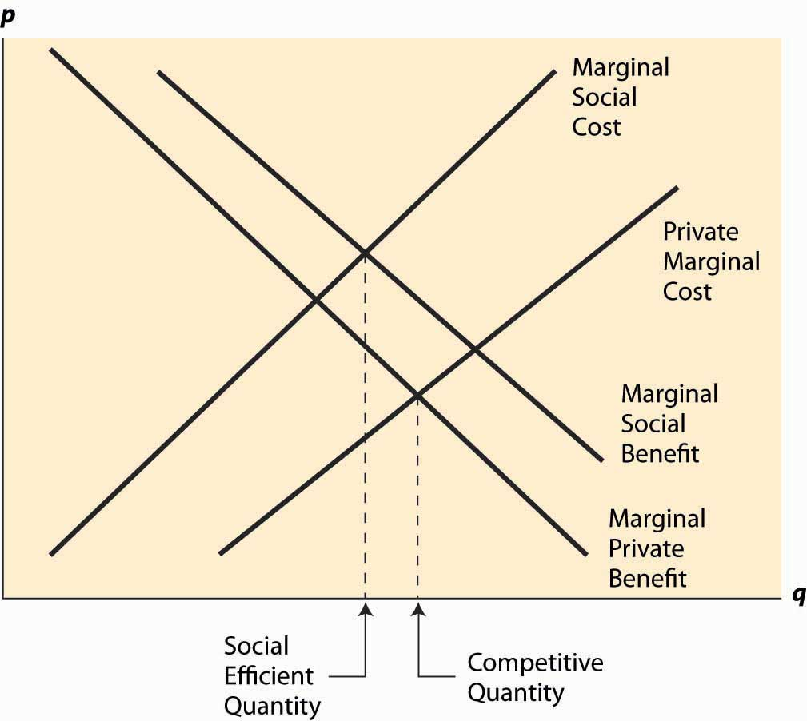

These effects are called external effects, or externalities. An externalityAny effect on people not involved in a particular transaction. is any effect on people not involved in a particular transaction. Pollution is the classic example. When another person buys and smokes cigarettes, there is a transaction between the cigarette company and the smoker. But if you are sitting near the smoker, you are an affected party who is not directly compensated from the transaction, at least before taxes were imposed on cigarettes. Similarly, you pay nothing for the benefits you get from viewing your neighbor’s flowers, nor is there a direct mechanism to reward your neighbor for her efforts.
Externalities will generally cause competitive markets to behave inefficiently from a social perspective, absent a mechanism to involve all the affected parties. Without such a mechanism, the flower planter will plant too few beautiful flowers, for she has no reason to take account of your preferences in her choices. The odious smoker will smoke too much and too close to others, and the loud neighbor will play music much too late into the night. Externalities create a market failureA situation where a competitive market does not yield the socially efficient outcome.—that is, a situation where a competitive market does not yield the socially efficient outcome.
Education is viewed as creating an important positive externality. Education generates many externalities, including more—and better—employment, less crime, and fewer negative externalities of other kinds. It is widely believed that educated voters elect better politicians.This is a logical proposition, but there is scant evidence in favor of it. There is evidence that educated voters are more likely to vote, but little evidence that they will vote for better candidates. Educated individuals tend to make a society wealthy, an advantage to all of society’s members. As a consequence, most societies subsidize education in order to promote it.
A major source of externalities arises in communicable diseases. Your vaccination not only reduces the likelihood that you will contract a disease but also makes it less likely that you will infect others with the disease.
Let’s consider pollution as a typical example. A paper mill produces paper, and a bad smell is an unfortunate by-product of the process. Each ton of paper produced increases the amount of bad smells produced. The paper mill incurs a marginal cost, associated with inputs like wood and chemicals and water. For the purposes of studying externalities, we will refer to the paper mill’s costs as a private costThe cost borne by the supplier., the cost borne by the supplier (in this case, the paper mill itself). In addition, there are external costsThe costs borne by third parties., which are the costs borne by third parties, that arise in this case from the smell. Adding the private costs and the external costs yield the total costs for all parties, or the social costsThe total costs for all parties.. These costs, in their marginal form, are illustrated in Figure 7.1 "A negative externality".
Figure 7.1 A negative externality
In Figure 7.1 "A negative externality", the demand has been labeled “marginal benefit,” for reasons that will become apparent; but it is at this point just the standard demand, the marginal value of the product. The paper mill’s costs have been labeled marginal private cost to reflect the fact that these costs are only the mill’s costs and don’t include the cost of the bad smell imposed on others. The marginal social cost is obtained by adding the marginal external cost to the marginal private cost. The marginal external cost isn’t graphed in the figure; but the size of it is illustrated at one quantity, and it is generally the difference between marginal social cost and marginal private cost.
Left to its own devices, the paper market would equate the marginal private cost and the marginal benefit to produce the competitive quantity sold at the competitive price. Some of these units—all of those beyond the quantity labeled “Socially Efficient Quantity”—are bad from a social perspective: They cost more to society than they provide in benefits. This is because the social cost of these units includes pollution, but paper buyers have no reason to worry about pollution or even to know that it is being created in the process of manufacturing paper.
The deadweight loss of these units is shown as a shaded triangle in the figure. The loss arises because the marginal social cost of the units exceeds the benefit, and the difference between the social cost and the benefits yields the loss to society. This is a case where too much is produced because the market has no reason to account for all the costs; some of the costs are borne by others.
Figure 7.2 External costs and benefits
Generally, a negative externality like pollution creates a marginal social cost that is higher than the marginal private cost. Similarly, a positive externality like beautification creates a higher marginal social benefitA benefit for all parties.—a benefit for all parties—than the marginal private benefit (demand), with the difference being benefits obtained by third parties, or external benefitsBenefits obtained by third parties.. These are to some extent conventions. One could have incorporated a positive externality by a reduction in cost—but the convention remains. An example of a product that produces both positive and negative externalities is illustrated in Figure 7.2 "External costs and benefits". Streetlights are an example of a product that produces both externalities: Most of us like lighted streets, but they are terrible for astronomers. Similarly, large highways produce benefits for commuters and yet harm nearby residents.
The marginal private benefitThe benefit obtained by the buyer.—the benefit obtained by the buyer—and the marginal private cost give the demand and supply of a competitive market, and hence the competitive quantity results from the intersection of these two. The marginal social benefit and the marginal social cost give the value and cost from a social perspective; equating these two generates the socially efficient outcome. This can be either greater or less than the competitive outcome depending on which externality is larger.
Consider a town on a scenic bay that is filled with lobsters. The town members collect and eat the lobsters, and over time the size of the lobsters collected falls, until they are hardly worth searching for. This situation persists indefinitely. Few large lobsters are caught, and it is barely worth one’s time attempting to catch them. This sort of overuse of a resource due to lack of ownership is known as the tragedy of the commonsOveruse of a resource due to lack of ownership..
The tragedy of the commons is a problem with a common resourceA resource shared by many people. shared by many people—in this case, the lobster bay. Catching lobsters creates an externality by lowering the productivity of other lobster catchers. The externality leads to overfishing, since individuals don’t take into account the negative effect they have on each other, ultimately leading to a nearly useless resource and potentially driving the lobsters to extinction. As a consequence, the lobster catching is usually regulated.